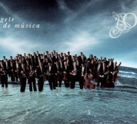
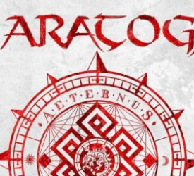

[ABRIL] Concierto de la OSPA
Viernes, 12 de abril 2019.
Lugar:Auditorio Príncipe Felipe
Plaza de la Gesta, 4-6 33007 - Oviedo
Teléfono: 985 24 62 17
Fecha: 12 de Abril de 2019
Horario: 20:00h
Concierto extraordianario de Semana Santa de la Orquesta Sinfónica del Principado de Asturias con Rossen Milanov (director) y el Coro de la Fundación Princesa de Asturias.
Programa:
>>> Mompou, Los improperios.
>>> Szymanowski, Stabat Mater op.53.
[ABRIL] Saratoga concierto en vivo
Gijón, 12/04/2019, 21:00h
Lugar: Sala Acapulco - Casino
C/Fernández Vallín, 5 33205 - Gijón
Teléfono: 985 34 34 34
Fecha: 12 de Abril de 2019
Anticipada: 20€ / Taquilla: 23€
Horario: 21:00h
Concierto de Saratoga, uno de los grupos más importantes de Metal en castellano.
[ABRIL] Manuel Vilas Concierto
Avilés, 13/04/2019, 20:30h

Lugar: Centro Cultural Internacional Oscar Niemeyer
Avenida del Zinc, SN 33400 - Avilés
Teléfono: 985 51 26 75
Fecha:14 de Abril de 2019
Precio: 6€
Horario: 13:00h
En este recital Manuel Vilas presenta una serie de obras donde el protagonista absoluto es el arpa de dos órdenes: un tipo de arpa autóctona, netamente hispana, que posee dos filas de cuerdas cruzadas. Una de ellas correspondería a una escala diatónica (como las teclas blancas de un teclado) y la otra a la cromática (las teclas negras del mismo teclado). Fue un instrumento que tuvo una etapa de auténtico esplendor en la península ibérica sobre todo en el siglo XVII, donde se utilizó tanto en ambientes sacros (catedrales, conventos) como profanos (compañías teatrales, palacios, etc.). En el presente concierto se podrán escuchar algunas de mejores obras escritas para este arpa y otras transcritas de otros instrumentos, como el órgano o la vihuela, siendo esto una práctica muy habitual en la época.